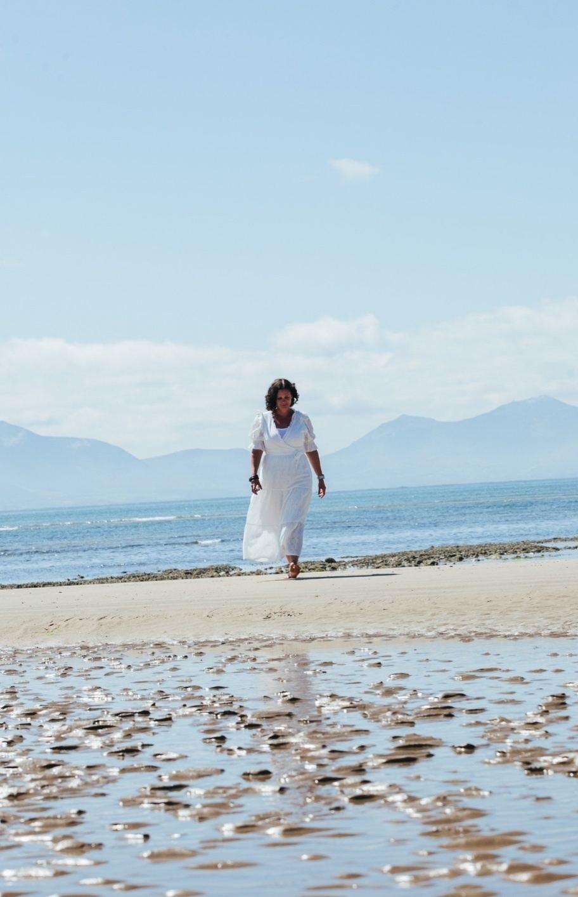
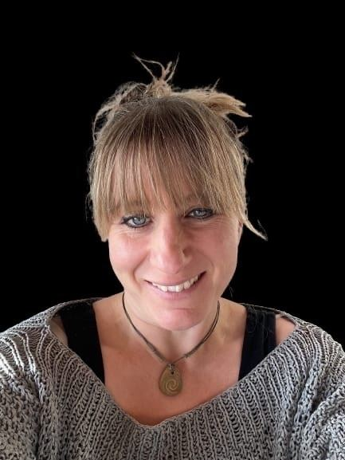

Stories from OTs
What do others say about Beki's courses? In their own words, and their own videos.
Sarita
Sarita made $21,550 AUD within her first launch, 4 months into the programme. That’s more than 10x the initial investment.
Sarita has now filled two cohorts of her online programme, working with people across 7 countries and doing work she genuinely enjoys.
“The feedback has been incredible and really inspiring to continue.”
Ivan
Ivan sold his first high ticket offer within 3 weeks, and made 5 times the cost of his investment back during his time with us. Ivan automated his business quickly, and has also now started the delegation process too.
He managed all of this whilst running a successful OT business!
Bethany
Bethany came to us with a business already created. We helped her to make it more profitable, and streamlined and have a higher ticket offer.
Bethany doubled her OT income within 6 months of starting with us, and has since gone on to earn more than she has ever before as her business continues to grow and expand!
Alex
Alex very quickly replaced her OT wage and left her job to concentrate on her business full time within 9 months.
Ellie
Ellie made $15k in a 2 week period, has just had a $5000 week and has now been able to drop her contract work.
There were a lot of pieces to put together in Ellie's business, which is a hybrid OT and parent coaching model. In less than 6 months she has completely spun her world round and is now ready for the next stages of growth.
She did all of this with a toddler and moved house as well!
Shaenelle
Shaenelle signed up 5 clients within 3 weeks, all on big packages meaning she did not have to return to her OT job after the summer break.
During her fifth month on the Abundance Accelerator she brought in 10k of cash sales! After this she had a 15k month and kept growing from there.
Lisa
Lisa just signed her first 1:1 client!! AND created a webinar, AND got people signed up to it...all in one week!!
Clare
Clinical Hypnotherapist and Mindfulness Coach.
Clare was earning a maximum of £400 per month in her business before we worked together. At this stage Clare has passed £2000 per month and she is headed towards her next goal of £4000 monthly.
Clare has created a beautiful, blended business where she works 1:1, in schools and hosts groups.
Orla
There is not a one size fits all approach in business. Orla is a great example of this.
One of these was facing the camera for social media. It can take courage to put yourself on social media and this can be an energy drain for some.
Orla has created a beautiful business, has 3 regular clients and funnels that are set up and ready for her to expand on this start.
Nicola
OT and nature-based coachWe worked together for 6 months and Nicola was able to make double the cost of working with me.
“What made me choose Beki was how wonderfully human and actually imperfect she was.”
“She turned up to the intro call with paint on her face.”
“I've signed up 3 paid clients now and 3 unpaid trial clients before that, all of which have been since I started working with Beki.”

Bibba
After I completed my coaching accreditation I thought that I would feel confident to go out there and find clients with relative ease. But things didn’t quite work out like that.
Beki supported me and helped me to dig into what was behind these fears. She gave me space and strategies to work through the limitations that I was placing on myself and allowed me to go at my own pace.
Fast forward a few months, I now support a community of ladies within my niche, have 2 further clients, and the best part, I get to do this with a business partner and friend for life.
More kind words
“I have to say that since I met Beki, my life has been changing for the better. I was stuck with my business and there had been no growth or new clients. I can feel the energy of the business changing.”
“I find working with Beki very valuable. I have grown and become more confident and I am becoming comfortable with being visible! I would highly recommend Beki!”
“The course is inspiring. It provides a safe container to access support to take action, get inspiration & overcome blocks. I love the group coaching calls!”
“Beki has created the most amazing community of like-minded women who are also on a mission to help others and make a difference in the world.”
“After a period of being stuck and not knowing what direction I wanted to go in, she helped me open up with what was really holding me back. This jumpstarted my business idea exponentially!”
“This course has been brilliant, absolutely brilliant. I am so pleased I signed up. Not only strategy but mindset as well. You’ve been incredibly generous with it all.”
“I am so grateful for everything. My life, the impact that I have managed to have, the knowledge that you have given to me, I am a better person for it.”
“That session was fantastic. I definitely feel a lot more fired up. Come on, now I can do this.”
“Beki is an amazing coach! She is truly inspiring and left me feeling motivated, focused and ready to achieve my goals.”
“I feel excited to be working with you now as you have done it already. This is definitely working!”
Your story could be next.
Let's talk about how we can help take your business to the next level.